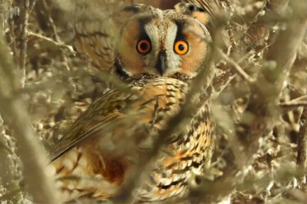

With its awe-inspiring capacity for blending seamlessly into the dense foliage of pine trees, the Long-Eared Owl possesses a remarkable skill in camouflaging itself through a combination of intricate brown and black feathers. This species enjoys a global distribution and is celebrated for its abundance in various habitats. Its haunting calls, capable of carrying for up to a mile through the depths of dense forests, provide a distinct and easily recognizable auditory experience for those fortunate enough to visit its enchanting realms.
During the breeding season, which typically commences in March, male Long-Eared Owls establish their territories by employing distinctive singing and wing-flapping patterns. Setting themselves apart from many other owl species, these owls do not construct their own nests. Instead, they seize available hawk nests or occupy tree trunks with cavities, adapting resourcefully to their surroundings.
Similar to their owl counterparts, the Long-Eared Owl’s diet predominantly comprises small mammals such as mice, voles, shrews, and rodents. Additionally, they exhibit versatility by consuming other animal groups, including insects and small birds. These skilled hunters employ a patient approach, adeptly waiting for prey to enter their range while perching or gracefully gliding low to the ground in search of sustenance.
The Long-Eared Owl population faces challenges stemming from habitat destruction and unfortunate encounters with vehicles, resulting in a decline. However, on a global scale, the species continues to expand its range.
Despite these obstacles, the Long-Eared Owl currently retains a “Least Concern” classification on the IUCN Red List. Renowned for their exceptional camouflage and haunting calls, these owls lend a familiar presence to wooded areas, captivating the hearts of nature enthusiasts.